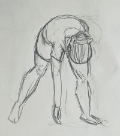
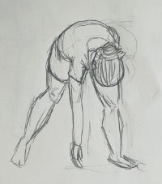

A hungry stray cat tries to get some toast from intelligent rats who want to use it for science.
A person tries to remember an important message from a passed friend, but the only recording of it was in a video tape destroyed by a recent fire.
A gorgon is running late to a doctor's appointment.

 
